Code
library(sf)
library(tmap)
library(terra)
library(viridis)
library(CAST)
library(tidyverse)
library(scales)library(sf)
library(tmap)
library(terra)
library(viridis)
library(CAST)
library(tidyverse)
library(scales)plots = st_read("data/plots.gpkg", quiet = TRUE)
predictors = rast("data/predictors.tif")
modeldomain = st_read("data/modeldomain.gpkg", quiet = TRUE)
predictor_names = names(predictors)
response_name = "Species_richness"
# models
rcv_model = readRDS("modelling/randomcv_model.RDS")
scv_model = readRDS("modelling/spatialcv_model.RDS")
ffs_model = readRDS("modelling/ffs_model.RDS")
# cv strategies
knndm_setup = readRDS("modelling/knn_setup.RDS")
plots$knn_fold = knndm_setup$clusters
plots$random_fold = sample(seq(5), size = nrow(plots), replace = TRUE) ## imitating a random 5 fold cross validation
# Random CV Results
rcv_prediction = readRDS("modelling/randomcv_prediction.RDS")
rcv_DI = readRDS("modelling/randomcv_DI.RDS")
rcv_AOA = readRDS("modelling/randomcv_AOA.RDS")
rcv_aoaplot = readRDS("modelling/randomcv_aoaplot.RDS")
# Knndm CV Results
scv_DI = readRDS("modelling/spatialcv_DI.RDS")
scv_AOA = readRDS("modelling/spatialcv_AOA.RDS")
scv_aoaplot = readRDS("modelling/spatialcv_aoaplot.RDS")
scv_stats = readRDS("modelling/spatialcv_aoastats.RDS")
# Feature Selection Results
ffs_prediction = readRDS("modelling/ffs_prediction.RDS")
ffs_DI = readRDS("modelling/ffs_DI.RDS")
ffs_AOA = readRDS("modelling/ffs_AOA.RDS")
ffs_aoaplot = readRDS("modelling/ffs_aoaplot.RDS")
ffs_stats = readRDS("modelling/ffs_aoastats.RDS")
# Feature Selection Expected Error
ffs_expected = readRDS("modelling/ffs_expected.RDS")
ffs_RMSE = readRDS("modelling/ffs_expectedRMSE.RDS")
ffs_updatedAOA = readRDS("modelling/ffs_updatedAOA.RDS")
ffs_calib = readRDS("modelling/ffs_calibdata.RDS")
# color palette
Okabe_Ito <- c("#E69F00", "#56B4E9", "#009E73", "#F0E442", "#CC79A7") # c("#0072B2", "#D55E00", "#000000")tm_shape(modeldomain)+
tm_borders()+
tm_shape(plots)+
tm_symbols(col = "Species_richness", style = "cont",
legend.col.reverse = TRUE,
palette = plasma(50, direction = -1),
size = 0.2, title.col = "Species richness")+
tm_layout(frame = FALSE)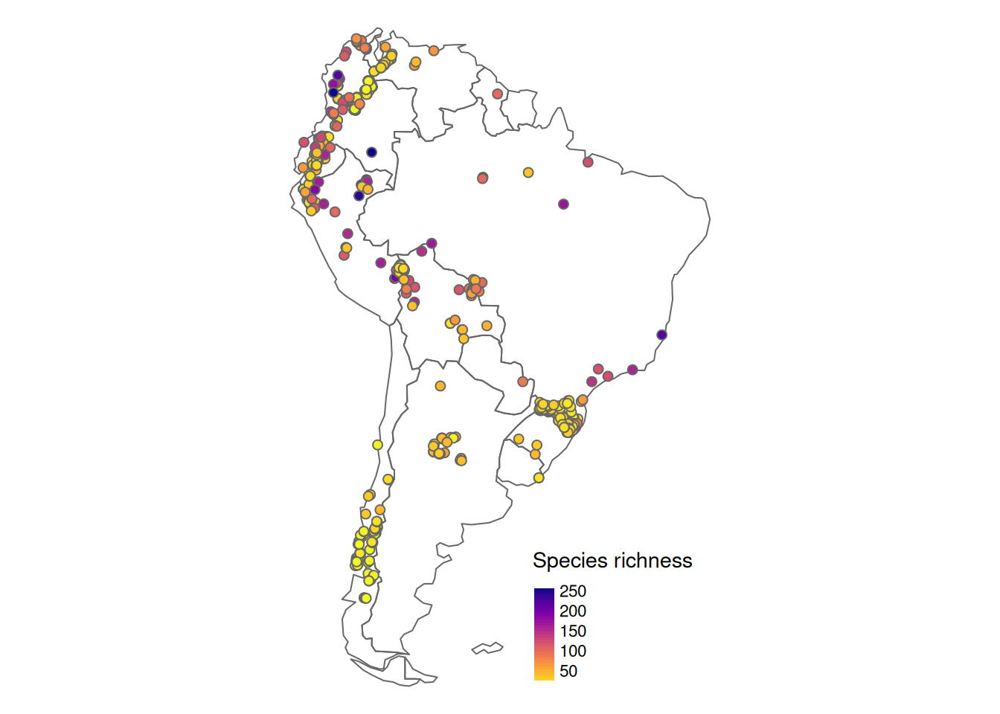
p = predictors[[c("bio_4", "bio_12", "bio_8", "elev")]]
names(p) = c("Temp. Seasonality", "Annual Precipitation", "Temp. wettest quarter", "Elevation")
tm_shape(p)+
tm_raster(style = "cont", title = "", legend.reverse = TRUE)+
tm_facets(free.scales = TRUE)+
tm_layout(legend.position = c("right", "bottom"),
legend.just = "left",
panel.show = TRUE,
panel.labels = names(p),
panel.label.bg.color = NA,
frame.lwd = NA,
frame = FALSE)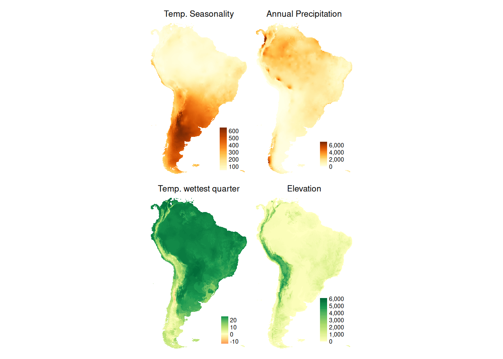
gd_rcv = plot_geodist(plots,
modeldomain,
showPlot = FALSE)
gd_rcv$plot +
scale_y_continuous(expand = c(0,0))+
scale_x_continuous(expand = c(0,0),
trans = "log10",
labels = trans_format("log10", math_format(10^.x)))+
theme_light()+
theme(legend.position = "bottom")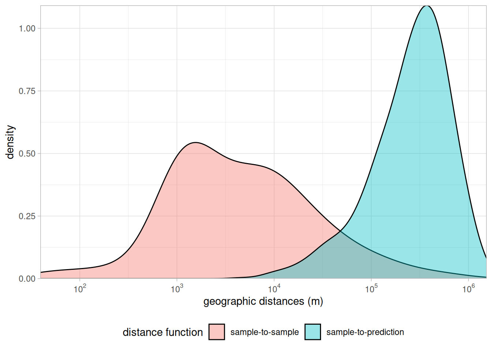
tm_shape(modeldomain)+
tm_borders()+
tm_shape(plots)+
tm_symbols(col = "random_fold", style = "cat",
legend.col.reverse = FALSE,
palette = Okabe_Ito,
size = 0.2, title.col = "Random Folds",
legend.col.is.portrait = FALSE)+
tm_layout(frame = FALSE)
gd_rcv = plot_geodist(plots,
modeldomain,
cvfolds = plots$random_fold,
showPlot = FALSE)
gd_rcv$plot +
scale_y_continuous(expand = c(0,0))+
scale_x_continuous(expand = c(0,0),
trans = "log10",
labels = trans_format("log10", math_format(10^.x)))+
theme_light()+
theme(legend.position = "bottom")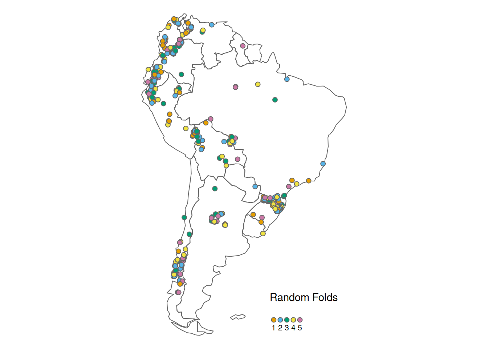
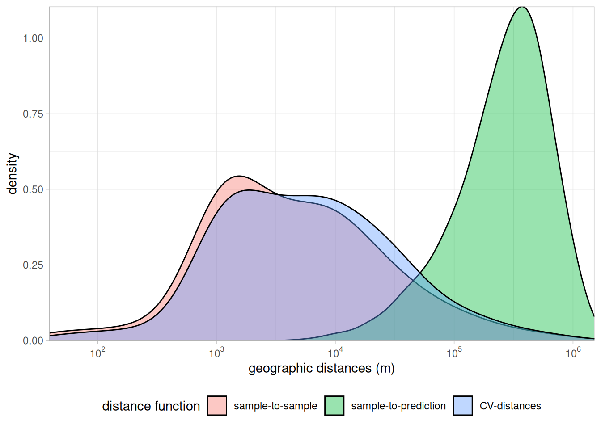
tm_shape(modeldomain)+
tm_borders()+
tm_shape(plots)+
tm_symbols(col = "knn_fold", style = "cat",
legend.col.reverse = FALSE,
palette = Okabe_Ito,
size = 0.2, title.col = "knndm Folds",
legend.col.is.portrait = FALSE)+
tm_layout(frame = FALSE)
gd = plot_geodist(plots,
modeldomain,
cvfolds = plots$knn_fold,
showPlot = FALSE)
gd$plot +
scale_y_continuous(expand = c(0,0))+
scale_x_continuous(expand = c(0,0),
trans = "log10",
labels = trans_format("log10", math_format(10^.x)))+
theme_light()+
theme(legend.position = "bottom")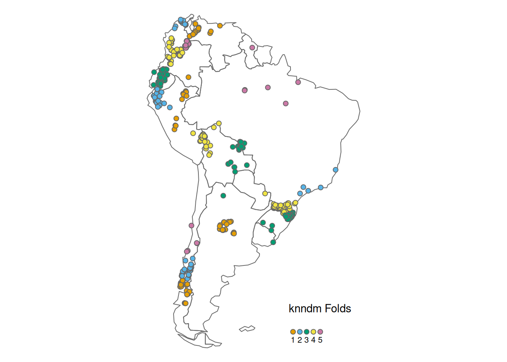
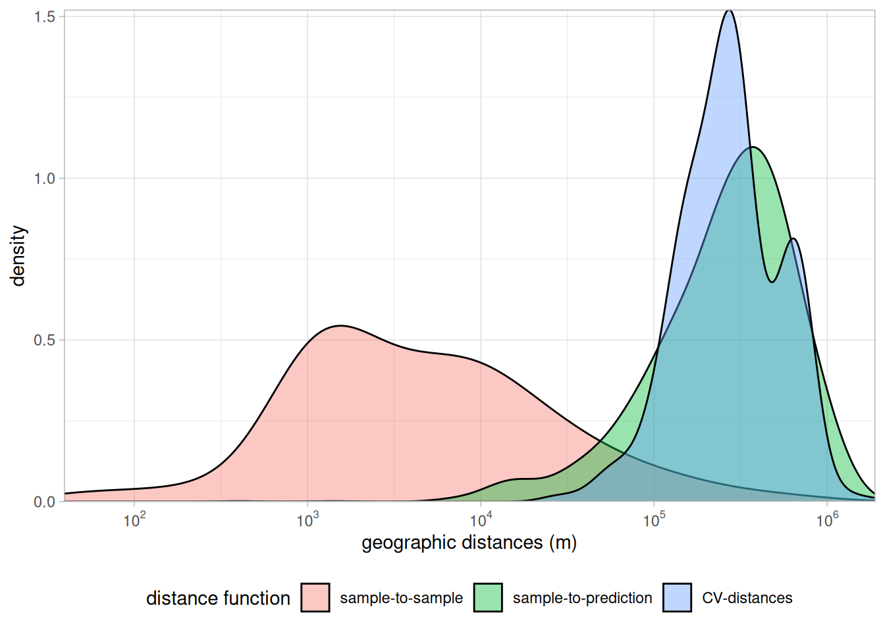
cv_results = rbind(global_validation(rcv_model),
global_validation(scv_model),
global_validation(ffs_model)) |>
as.data.frame() |> mutate("CV" = c("random", "knndm", "knndm"),
"predictors" = c("21", "21", "4 (ffs)"))
knitr::kable(cv_results)| RMSE | Rsquared | MAE | CV | predictors |
|---|---|---|---|---|
| 28.43977 | 0.5894510 | 16.31257 | random | 21 |
| 38.25358 | 0.3337219 | 23.08746 | knndm | 21 |
| 36.22226 | 0.3847437 | 23.78825 | knndm | 4 (ffs) |
tm_shape(rcv_prediction)+
tm_raster(title = "Predicted \nSpecies Richness", style = "cont",
palette = mako(50, begin = 0.2),
legend.reverse = TRUE)+
tm_layout(legend.position = c("right", "bottom"),
legend.just = "left",
frame = FALSE)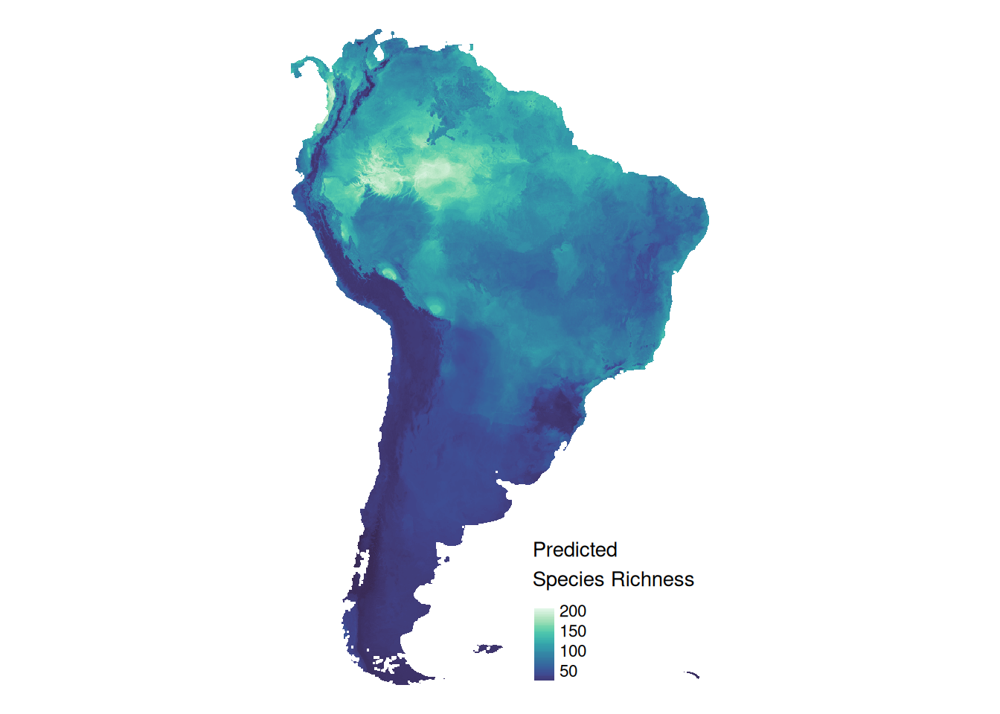
rcv_aoaplot +
scale_x_continuous(expand = c(0,0))+
theme(panel.grid.minor = element_blank())
tm_shape(rcv_DI)+
tm_raster(palette = viridis(50), style = "cont", legend.reverse = TRUE, breaks = c(0,0.1,0.223,0.5,1))+
tm_layout(legend.position = c("right", "bottom"),
legend.just = "left",
frame = FALSE)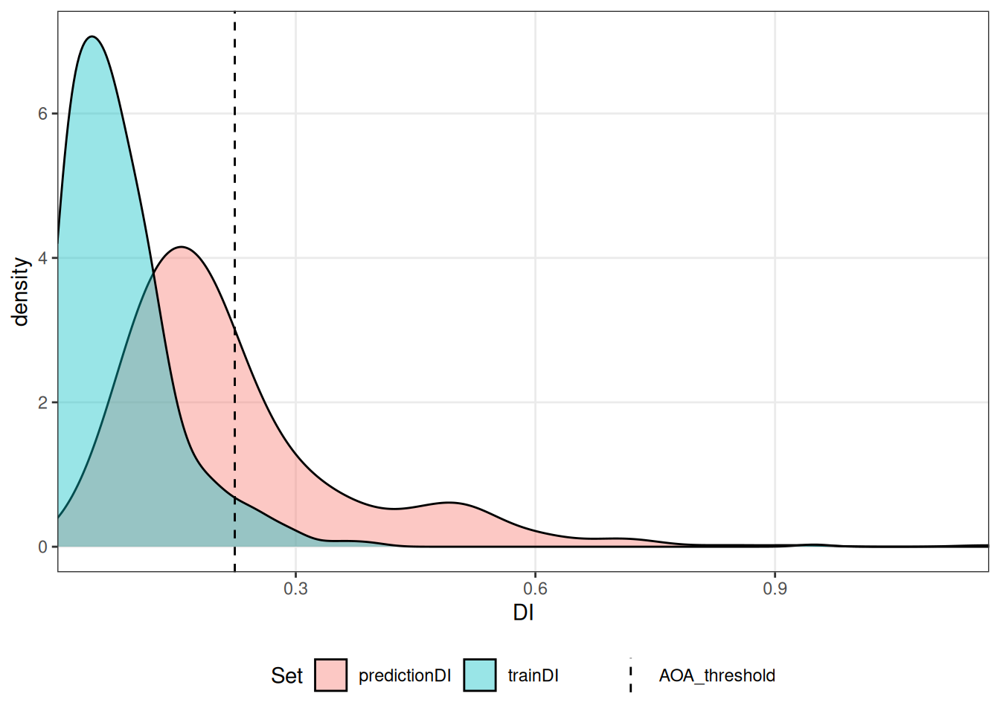
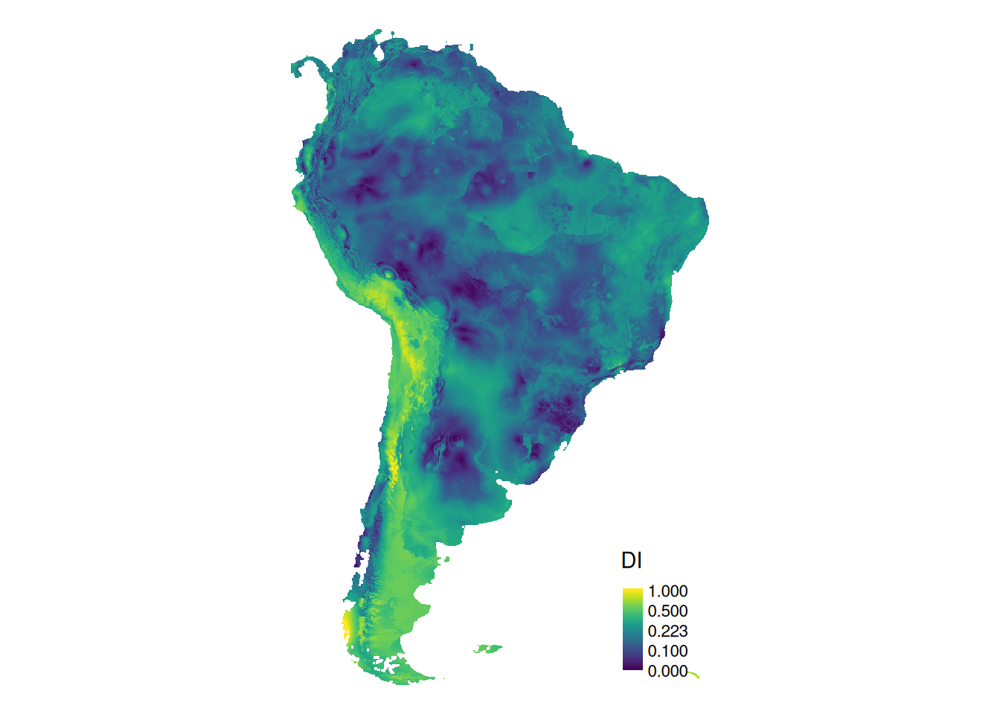
tm_shape(rcv_prediction)+
tm_raster(title = "Predicted \nSpecies Richness", style = "cont",
palette = mako(50, begin = 0.2),
legend.reverse = TRUE)+
tm_shape(rcv_AOA)+
tm_raster(palette = c("1" = NA, "0" = "darkgoldenrod1"), style = "cat", legend.show = FALSE)+
tm_add_legend(type = "fill", col = "darkgoldenrod1", border.lwd = 0,labels = "Outside AOA")+
tm_layout(legend.position = c("right", "bottom"),
legend.just = "left",
frame = FALSE)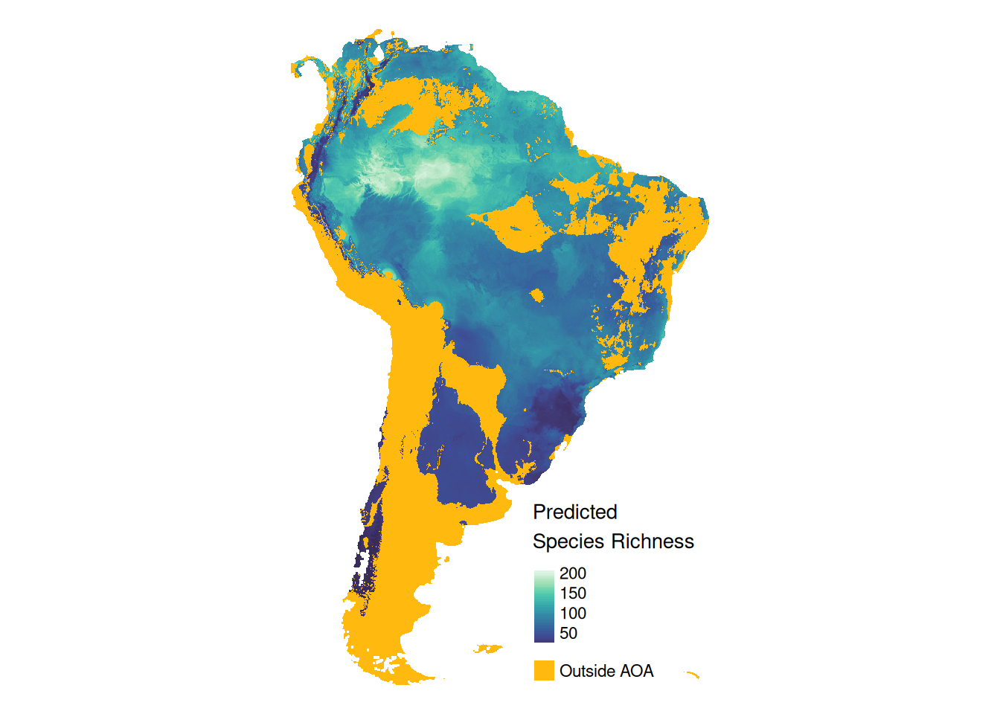
scv_aoaplot +
scale_x_continuous(expand = c(0,0))+
theme(panel.grid.minor = element_blank())
tm_shape(scv_DI)+
tm_raster(palette = viridis(50), style = "cont", legend.reverse = TRUE, breaks = c(0,0.1,0.368,0.5,1))+
tm_layout(legend.position = c("right", "bottom"),
legend.just = "left",
frame = FALSE)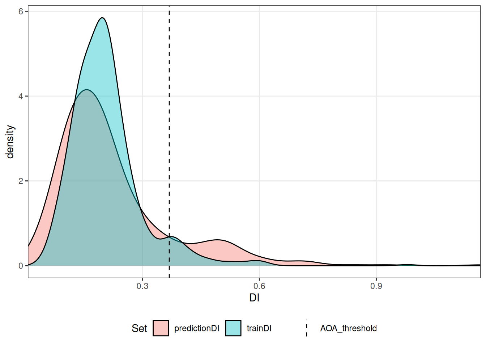
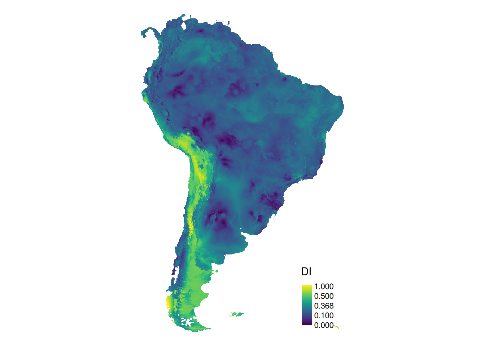
tm_shape(rcv_prediction)+
tm_raster(title = "Predicted \nSpecies Richness", style = "cont",
palette = mako(50, begin = 0.2),
legend.reverse = TRUE)+
tm_shape(scv_AOA)+
tm_raster(palette = c("1" = NA, "0" = "darkgoldenrod1"), style = "cat", legend.show = FALSE)+
tm_add_legend(type = "fill", col = "darkgoldenrod1", border.lwd = 0,labels = "Outside AOA")+
tm_layout(legend.position = c("right", "bottom"),
legend.just = "left",
frame = FALSE)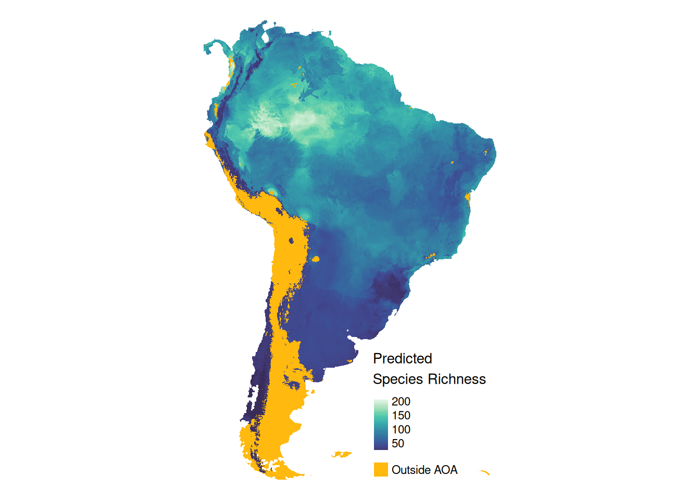
ffs_aoaplot +
scale_x_continuous(expand = c(0,0))+
theme(panel.grid.minor = element_blank())
tm_shape(ffs_DI)+
tm_raster(palette = viridis(50), style = "cont", legend.reverse = TRUE, breaks = c(0,0.1,0.328,0.5,1))+
tm_layout(legend.position = c("right", "bottom"),
legend.just = "left",
frame = FALSE)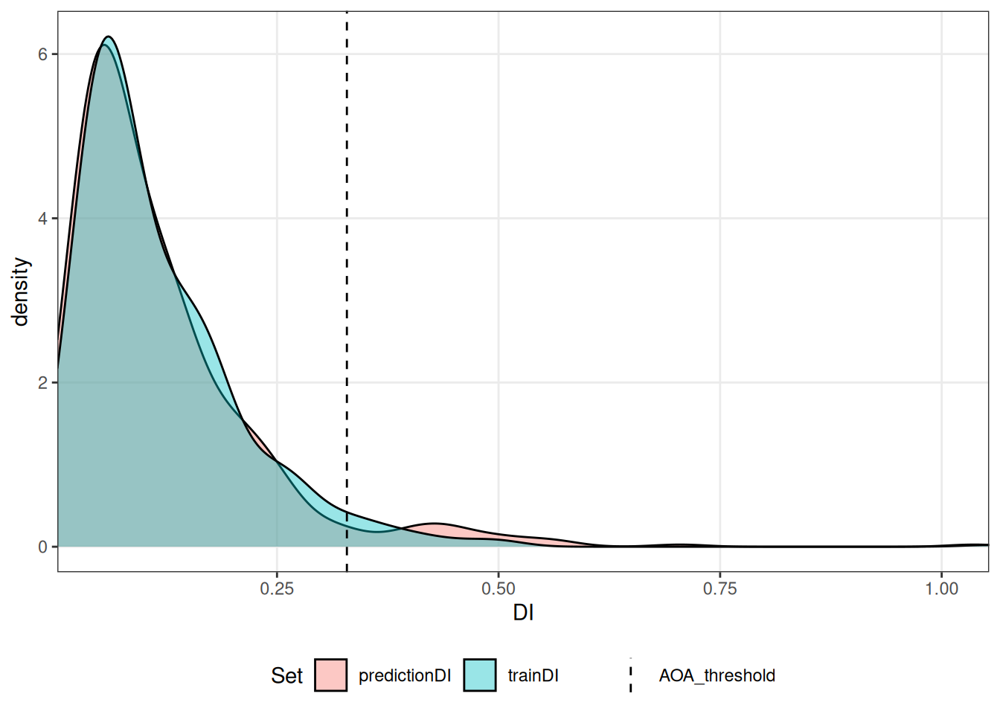
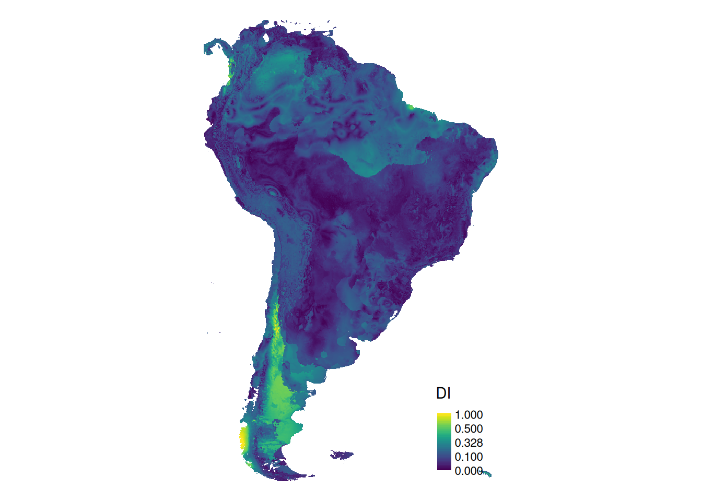
tm_shape(ffs_prediction)+
tm_raster(title = "Predicted \nSpecies Richness", style = "cont",
palette = mako(50, begin = 0.2),
legend.reverse = TRUE)+
tm_shape(ffs_AOA)+
tm_raster(palette = c("1" = NA, "0" = "darkgoldenrod1"), style = "cat", legend.show = FALSE)+
tm_add_legend(type = "fill", col = "darkgoldenrod1", border.lwd = 0,labels = "Outside AOA")+
tm_layout(legend.position = c("right", "bottom"),
legend.just = "left",
frame = FALSE)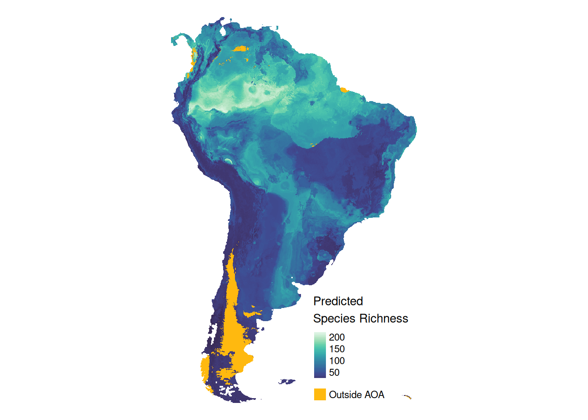
ffs_expected$plot
tm_shape(ffs_RMSE)+
tm_raster(title = "Expected \nRMSE",style = "cont", legend.reverse = TRUE, palette = mako(50, direction = -1))+
tm_shape(ffs_updatedAOA)+
tm_raster(palette = c("1" = NA, "0" = "darkgoldenrod1"), style = "cat", legend.show = FALSE)+
tm_add_legend(type = "fill", col = "darkgoldenrod1", border.lwd = 0,labels = "Outside AOA")+
tm_layout(legend.position = c("right", "bottom"),
legend.just = "left",
frame = FALSE)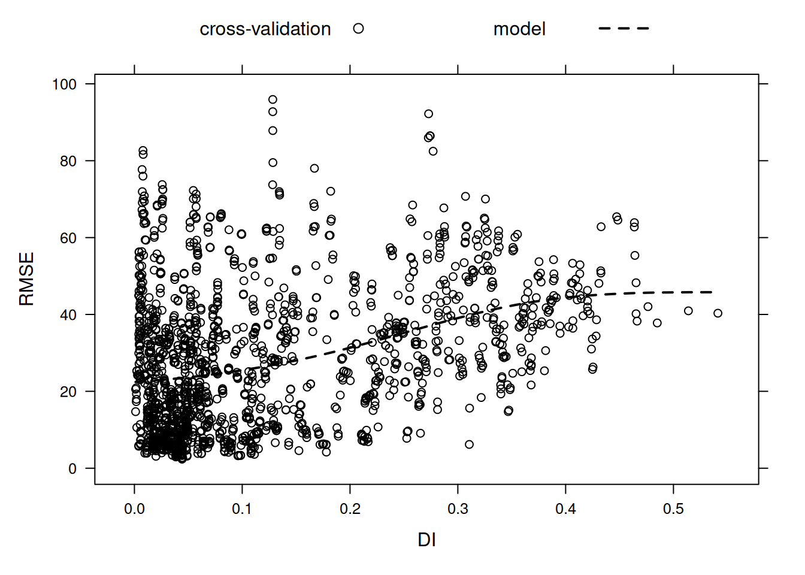
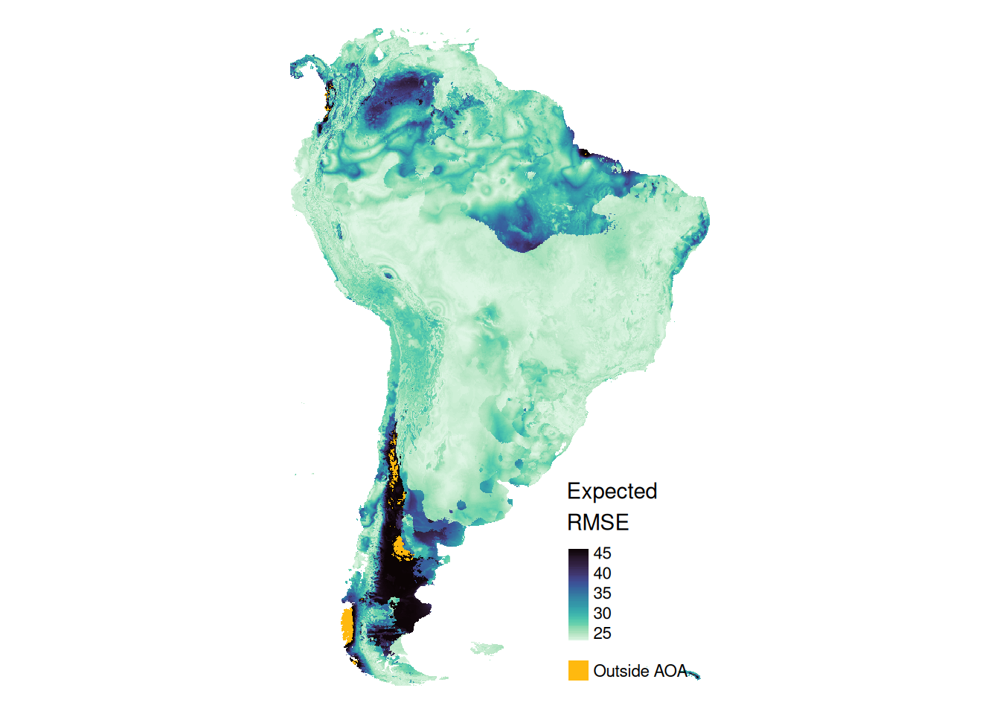